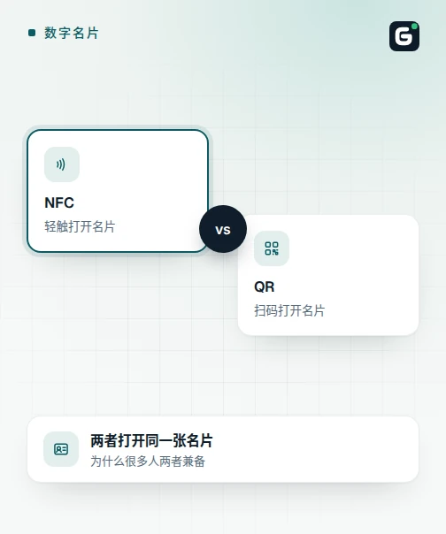
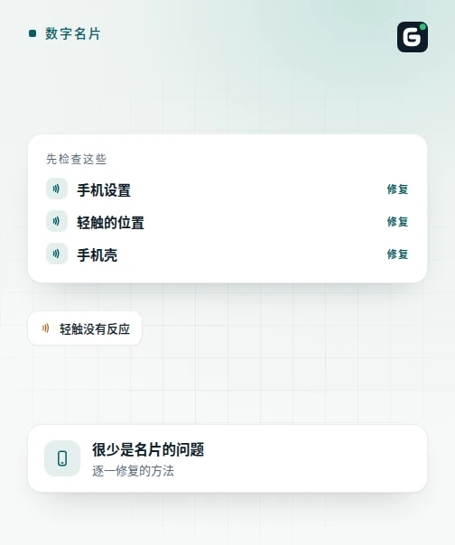

2026年9月8日

博客 · 数字名片

快速解答
NFC名片感应失败，通常出在这四个原因之一：对方手机设置中NFC被关闭；碰触位置不对（iPhone的读取器在顶部边缘，大多数安卓手机在背面中央）；较厚的手机壳或金属钱包阻挡了信号；或者名片在手机读取完成前就被拿开了。请把名片平贴在读取器上两到三秒后再试一次。如果仍然无法感应，优质的数字名片还应该提供二维码和可分享链接，这样联系方式就不会只依赖NFC。
在新认识的客户面前感应失败，确实是个尴尬的时刻——但问题几乎从不出在名片本身。NFC的有效感应距离很短，各手机厂商把天线装在不同位置，而安卓手机出厂默认关闭NFC的情况，比大多数人以为的要常见得多。只要知道该检查哪些地方，大多数感应失败几秒钟就能解决，而一张设计得当的数字名片，本来就不会让对方陷入僵局。
在安卓手机上，NFC有自己的开关，通常在设置→已连接的设备→连接偏好设置里可以找到，而不少手机出厂时就默认关闭。如果名片对某人一直不起作用，这是第一件该检查的事——请对方在设置里搜索"NFC"并确认开关已打开。在iPhone上，自iOS 11起，读取NFC标签就在后台自动运作，无需单独寻找开关。
NFC天线在不同设备上的位置并不相同。在iPhone上，它位于手机最顶部边缘，就在背面摄像头上方——这个位置大多数人第一次都不会想到去尝试。在大多数安卓手机上，它大致位于背面板的中央。碰触手机底部感觉最自然，却也是名片在一部手机上明明用得好、换一部却似乎失灵的最常见原因之一。
NFC只在几厘米的距离内有效，手机需要一点时间才能检测到标签并作出反应。快速一碰就立刻拿开，可能会打断这个还未完成的读取过程。把名片平贴在手机背面（iPhone则是顶部边缘）两到三秒，不要来回移动，而不是碰一下就马上抽开。
较厚的手机壳——尤其是内置金属片、插着实体卡的卡槽，或带磁性扣的钱包夹层——都可能削弱或阻挡NFC信号，导致感应无法完成。如果某一部特定手机一直感应失败，不妨先取下手机壳再试，或把名片移离钱包或口袋里的金属物品，再判断是不是名片本身的问题。
并非所有NFC名片的底层运作方式都一样。有些名片直接把普通联系人文件（vCard）写入芯片，这类名片在iPhone上的表现可能不太稳定，因为苹果并不会把这份文件直接交给"通讯录"应用，安卓则不同。像Gotka的名片这样改为写入链接、打开一个数字资料页面的名片，则完全避开了这个问题：iPhone会像读取任何其他NFC标签一样读取并在Safari中打开链接，完全不需要额外安装应用。
即使一切设置都正确，偶尔仍会遇到对方NFC被关闭，或手机就是不配合的情况——这很正常，不代表出了故障。这正是为什么一张真正好用的数字名片，至少还会提供另外两种连接方式：让对方用手机自带相机应用扫描的二维码，以及能在任何浏览器上打开的可分享链接。如果感应不成功，这两者中任何一个都能在几秒钟内打开同一个资料页面。
Gotka的数字名片基于share2.io平台打造，无论是Design-Ready还是Custom-Design款式、金色还是银色，每张实体卡都标配NFC碰触、印刷二维码和可分享的资料链接三种方式，因此即使某次感应没能在对方手机上生效，也不会因此失去这段联系。如果您还在考虑是否值得配一张实体卡，我们这篇关于数字名片实际费用的文章，详细列出了套餐和卡片选项。
最常见的原因是对方手机的NFC功能被关闭——许多安卓手机默认就是关闭状态。第二常见的原因是感应位置：不同手机的NFC读取器位置不同，即使NFC已开启，碰到错误的角落也可能完全感应不到。请对方检查设置，并尝试在安卓手机的后盖中央或iPhone的顶部边缘缓慢轻碰。
可以，对于像Gotka这样基于链接的数字名片而言——自iOS 11起，iPhone无需任何应用即可读取会打开链接的NFC标签。读取器位于手机最顶部边缘，就在摄像头上方，这与大多数安卓手机的位置不同，也是iPhone感应看似失败的最常见原因。写入原始联系人文件（vCard）数据的旧式名片在iPhone上表现较不稳定，这也是基于链接的数字名片更可靠的原因之一。
NFC的有效感应距离非常短——通常在4厘米以内，手机需要一点时间来检测标签、读取内容并作出反应。轻碰后立刻拿开可能会打断这个过程。将名片平贴在手机背面（iPhone则是顶部边缘）两到三秒，不要移动，可以让读取有足够时间完成。
会的。较厚的手机壳，尤其是带金属片、插着实体卡的卡槽，或带磁性扣的钱包夹层，都可能阻挡或干扰NFC信号，导致感应失败。如果某一部手机一直感应不到，可以先取下手机壳，或把名片移离钱包或口袋里的金属物品，再判断是否名片本身出了问题。
优质的数字名片绝不会只依赖NFC。它还应该显示一个二维码，让对方用手机自带的相机应用扫描，并提供一个可分享的链接，在iPhone或安卓的任何浏览器上都能打开。Gotka基于share2.io平台打造的名片，标配同时提供这两种方式，因此一次感应失败绝不会是死路一条。
在第二部手机上测试，最好是品牌或操作系统与第一部不同的手机。如果在那部手机上感应成功，问题几乎可以确定出在原本那部手机的设置、手机壳或感应位置上，而不是名片本身。如果在多部手机、多次尝试下都持续失败，名片内部的NFC芯片可能已经损坏——例如被用力弯折，或接触过磁铁、水洗——此时应更换名片。